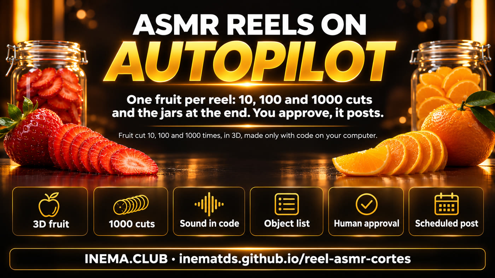
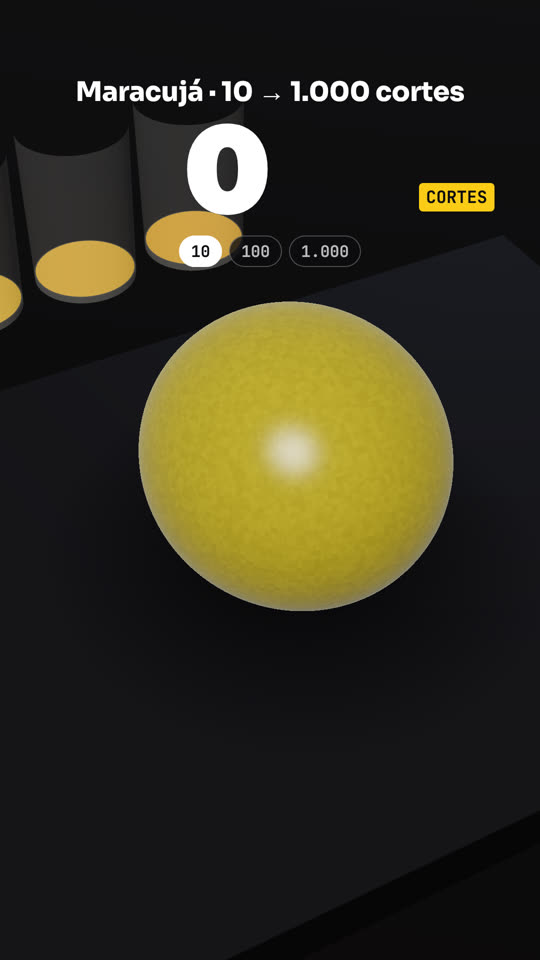
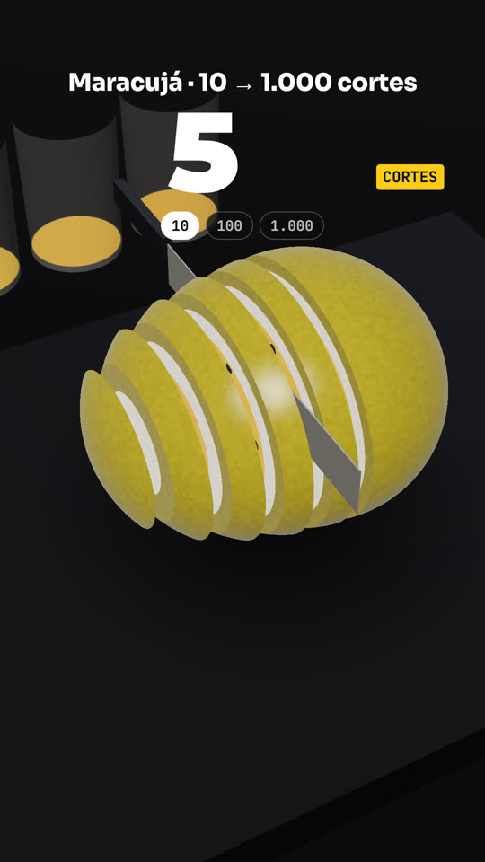

You can have 3 satisfying reels per week without filming anything. The ASMR reel factory does it for you.
Fruit-cutting videos hold people’s attention, but making them one by one gets tiring and slows the channel down. Here, the reel is made on your computer, for free, and only goes live after you approve it.
“Satisfying” reels (ASMR) keep people watching, but producing them every week takes work. This kit makes a 36-second vertical reel where a 3D fruit is cut 10, 100, and 1,000 times, with the sound of each cut and three jars at the end. Everything is drawn with code on your computer: no camera, no AI video, and no rendering costs. A fruit list becomes a series; an agent (Claude Code or Codex) makes 3 per week, you watch and approve them, and a script posts them to Instagram through the official API. To use it, you need Node.js, ffmpeg, and, if you want automatic posting, a professional Instagram account.

Video
Understand it in 2 minutes
From hook to end: the fruit list, the 10, 100 and 1,000 cuts made on your own computer, and the approval step that stays with you.
A simple promise in the first frame and a number that keeps growing. People stay to see the 1,000 cuts and the jar at the end.

0 s · the cover already shows what will happen

3 s · 10 cuts: the slices open to reveal the inside24 s · the 1,000 round: it becomes a pile of small pieces34 s · the 3 jars and the question for viewers to answer
📈 Grows 10 times each round
10, then 100, then 1,000 cuts, with each round faster. The large counter at the top keeps the promise visible throughout.
🔊 Every cut has a sound
The blade hitting the board, seeds popping, a piece falling into the jar. Everything lands on the exact frame of the cut, because sound and image read from the same list.
🫙 Ends with a question
“Which jar would you eat from?” Three results side by side invite comments without asking for a like or a link.
The week
What your week looks like: you just approve
Two scheduled tasks handle the repetitive work. You still decide what goes live.
Monday 9 a.m.: the agent makes 3 reels→You watch and approve→Mon, Wed, and Fri 6 p.m.: posts 1 approved reel
🍊 One list becomes a series
Each line in the list is a fruit (passion fruit, red onion, guava, tomato…). The framing, pace, and sound stay the same; only the object changes. That is what makes the channel feel like a series.
✋ Nothing goes live without you
The tasks never mark a reel as approved. You watch it, and only the reels you approve enter the posting queue.
💸 Rendering cost: zero
The video is drawn on your computer. You only pay for the agent plan you already use. Meta’s app and GitHub Pages are free.
Prefer to post manually? You can stop at the approval step: the Instagram app schedules posts, and each reel’s caption is ready in a text file. Automatic posting is optional. How to use it ↓
Technical section
The kit: for anyone who wants to build the factory
From here on, this is the technical part: installing, making the first reel, starting the series, and posting. You do not need this section to understand what came before.
What it is
A HyperFrames + Three.js project with three parts
HyperFrames turns an HTML page into a video, frame by frame. Three.js draws the 3D inside that page.
🍈 The reel
index.html + js/mundo.js: the fruit is an ellipse divided into small cubes; a shader cuts each cube along the ellipse and colors its face based on the color at that point inside (rind, skin, flesh, seeds, rings).
⏱️ One clock
js/cortes.js is the list of cuts (1,110 in total). The counter, blades, and sound all read from this list. The random seed changes for each reel, so each one cuts differently.
📦 The factory
objetos.csv + ferramentas/: prepare the next reel, make it (sound, checks, photos, render), approve it, and post it. Two ready-to-use prompts in agendar/ (in Portuguese).
How it works
From a line in the list to a post
Each object passes through 5 status values in objetos.csv. Only one step requires you.
A professional Instagram account (creator or business), a free Meta developer account, and a public GitHub repository to serve the video. See SETUP.md (in Portuguese) for the steps.
User guide · step by step
From your first reel to an automated series
Steps 1 to 4 make reels. Steps 5 and 6 set up automatic posting and scheduling.
1
Download and make the example reel
Generate the sound before rendering. The checks must finish without errors. The video is 36 seconds long, at 1080 × 1920.
Gets the first pendente object from objetos.csv and creates its folder. If the object is not one of the 9 ready-made objects, the command exits with code 2 and its folder’s objeto.js is marked PREENCHER: replace the measurements and colors as described in RECEITA.md (in Portuguese).
node ferramentas/novo-reel.mjs # first time: reels/2026-11-15-maracuja (first in the list)node ferramentas/novo-reel.mjs goiaba # or a specific object
3
Make the reel
Sound, checks, 3 still photos, and render. The result goes to prontos/<pasta>/ with reel.mp4, the photos, and legenda.txt. If a step fails, the object returns to pendente and the reason is recorded in FALHOU.md.
bash ferramentas/fazer-reel.sh maracuja
4
Watch and approve
Only you can mark an object as aprovado (approved). With no arguments, the command lists all objects and their status.
Create the Meta app, generate a token, and set up the public link repository (SETUP.md, parts 2 and 3). Paste the token into .env yourself, never into a chat. The dry run shows what would be posted without sending anything.
cp .env.exemplo .env # fill in IG_USER_ID, IG_ACCESS_TOKEN, LINKS_DIR and LINKS_URLnode ferramentas/postar-instagram.mjs --ensaio
node ferramentas/postar-instagram.mjs # posts 1 approved reel
6
Schedule the two tasks
The prompts are in agendar/ (in Portuguese). Use cron and Claude Code in the terminal (replace the path), or paste the prompt into the Claude desktop app and ask it to schedule a task for the same time. Cron is the scheduler on Linux and Mac: crontab -e opens a text editor in the terminal; paste the two lines at the end, save and close (in nano: Ctrl+O, Enter, Ctrl+X). --allowedTools lets the task use the terminal on its own. On Windows, use WSL or the desktop app.
crontab -e
# Monday 9 am: makes 3 reels (never posts)
0 9 * * 1 cd /caminho/reel-asmr-cortes && claude -p "$(cat agendar/1-fazer-reels.md)" --allowedTools "Bash Read Edit Write" >> agenda.log 2>&1
# Mon, Wed and Fri 6 pm: posts 1 approved reel
0 18 * * 1,3,5 cd /caminho/reel-asmr-cortes && claude -p "$(cat agendar/2-postar-aprovado.md)" --allowedTools "Bash Read" >> agenda.log 2>&1
What was tested
What was checked here, and what you still need to test
So you know what to expect before connecting your account.
Part
Status
Sound (som.mjs)
Ran: 1,110 cuts, 36 seconds, in about 1 second.
HyperFrames checks
No errors.
Still photos from the reel
Captured from the project itself: they are the images on this page.
Series (novo-reel, status, object without a design)
Tested on a copy of the project.
Posting (postar-instagram.mjs)
Dry-run mode only. The real post through Meta’s API was not done here; follow step 5 with 1 reel and check Instagram.
Full MP4 render
Not run in this version: follow step 1 on your machine.
Roadmap
Next steps
What could come later if the series works.
Now
Fruit in 3 rounds + series + Instagram postingWhat is in this repository.
Later
More object formatsObjects that are not ellipses (carrot, banana) and tools besides the blade.
Later
Other platformsTikTok and Shorts using the same prontos/.